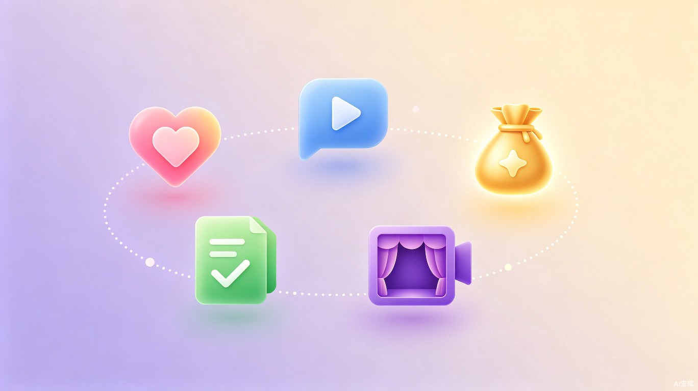

「凤栖梧」是一款以 AI 陪伴为核心的求职辅导平台，专为应届毕业生和求职中的年轻人设计。平台打造了温柔克制的求职教练学姐——「七七」，通过自然对话的方式提供情绪支持与专业指导，帮助求职者在焦虑与迷茫中找到方向。
传统求职工具重「功能」轻「感受」，用户在求职过程中往往感到孤独无助。「凤栖梧」将情感陪伴与求职辅导深度融合，让技术不止于工具，更成为可信赖的成长伙伴。
「良禽择木而栖，贤臣择主而事。」—— 凤栖梧，寓意每一位求职者都能找到属于自己的理想归宿。
「你不必独自面对这一切，七七会一直在这里陪你。」
目标人群
应届毕业生和正在求职的年轻人。他们可能刚刚离开校园、对未来充满期待却又不知所措，也可能已经经历了几次失败的面试、信心正在一点点被消耗。
面对面试官时手心出汗、大脑空白，面试后反复回放细节陷入自我否定。缺乏实战练习和心理调适的渠道。
不知道如何将自己的经历转化为打动 HR 的语言，网上的模板千篇一律，投出去的简历石沉大海。
不清楚自己适合什么行业和岗位，信息过载导致选择困难，身边缺少有经验的前辈给予针对性建议。
市场洞察
当前市面上的求职辅助产品主要聚焦于「信息匹配」与「模板工具」，在情感陪伴和个性化引导方面存在显著空白。
| 维度 | 传统求职平台 | AI 简历工具 | 凤栖梧 |
|---|---|---|---|
| 情绪支持 | 无 | 无 | 七七学姐全程陪伴 |
| 简历诊断 | 仅模板 | 基础优化 | 个性化诊断+修改建议 |
| 面试练习 | 无 | 无 | AI 模拟面试+复盘 |
| 职业规划 | 职业测评 | 无 | 对话式引导+个性化推荐 |
| 交互方式 | 表单/搜索 | 上传-下载 | 自然语言对话 |
| 个性化程度 | 低 | 中 | 高（持续学习用户画像） |
核心角色
温柔克制 · 专业可靠 · 始终在线
七七的设计理念来源于真实的「学姐」形象——她不是高高在上的导师，而是坐在你对面、认真听你说话的那个人。她会先接纳你的情绪，再给出建议；她会用自己的经历帮你缓解紧张，然后陪你一步步攻克难题。
核心功能
根据你当下的需求，七七会切换不同的陪伴方式。每一种模式都融合了情感关怀与专业方法论。

当你面试被拒、信心受挫时，七七会倾听你的感受，用温暖的话语帮你释放情绪。基于认知行为疗法（CBT）和积极心理学，引导你重建自信，避免陷入负面思维循环。
面试结束后，和七七聊聊面试经过。她会帮你梳理表现亮点、分析回答不足、提供改进策略，并给出针对性的高频面试题练习建议。
上传你的简历，七七会逐条分析内容结构、用词表达和排版逻辑。针对目标岗位给出差异化优化建议，帮你把经历转化为打动 HR 的语言。
选择目标岗位和面试类型（技术面、行为面、群面等），七七扮演面试官与你进行实时对话练习。面试结束后提供详细评分和改进报告。
职业规划迷茫时，七七通过结构化对话帮你梳理兴趣、能力和市场需求，推荐适合的方向和岗位。内置行业薪资数据库、面试经验合集和求职时间线规划工具。
使用场景
从焦虑不安到重拾信心，七七在每个关键时刻提供陪伴。
小林收到昨天的拒信，心情低落。打开凤栖梧，七七温和地问候后，引导小林倾诉感受，用积极心理学框架帮助她重建信心。
信心恢复后，小林上传了简历。七七逐条分析，指出项目描述过于笼统、缺少量化数据的问题，并给出具体的修改示范。
下午有字节跳动的面试。小林选择「模拟面试」模式，七七以技术面试官身份出题，小林在真实场景中练习表达和应变能力。
面试后立刻和七七复盘。七七帮小林梳理哪些问题回答得好、哪些可以更优化，并制定了下次面试的改进清单。
晚上，小林和七七聊了聊自己的职业困惑。七七基于对话中了解到的兴趣和能力，推荐了几个匹配的方向，并分享了相关岗位的真实面经。
核心价值
不是冰冷的工具，也不是泛泛的鸡汤。七七在提供情绪支持的同时，基于行业知识库和岗位模型给出有据可循的专业建议，让求职者「心里有底，手上有招」。
七七会记住每一次对话的内容，逐步构建用户画像——你的专业背景、求职偏好、性格特点、弱项强项。随着互动深入，陪伴和建议会越来越精准、越来越懂你。
研究表明，超过 70% 的大学生在求职过程中经历不同程度的焦虑和抑郁。凤栖梧通过低门槛的对话式交互，让求助变得自然，消除「寻求帮助」的心理负担。
从「用户使用工具」到「学姐陪你成长」，凤栖梧重新定义了求职辅助的交互方式。用户不再是信息的被动接收者，而是在对话中主动探索、获得成长。
技术架构
基于大语言模型 + 多轮对话引擎 + 垂直领域知识库构建，确保专业性与体验的平衡。
| 模块 | 技术方案 | 说明 |
|---|---|---|
| 对话核心 | 大语言模型 + Prompt Engineering | 角色人格注入，多轮上下文管理 |
| 知识增强 | RAG（检索增强生成） | 求职知识图谱 + 行业面经库实时检索 |
| 意图路由 | 多标签分类 + 情感分析 | 自动识别用户情绪状态，切换陪伴模式 |
| 简历解析 | NLP 结构化提取 | 自动解析简历字段，匹配岗位关键词 |
| 用户画像 | 对话日志聚合 + 偏好建模 | 持续积累用户特征，个性化推荐 |
| 前端交互 | React + 流式对话组件 | 自然打字效果，表情反馈，移动端适配 |
发展路线
实现七七角色人格，打通五种陪伴模式的对话流程。支持文字对话、简历上传解析、基础模拟面试。面向 2-3 所高校进行种子用户测试，收集反馈迭代。
上线微信小程序版本，降低使用门槛。引入语音交互能力，增加行业面经数据库覆盖。接入高校就业中心合作渠道，实现校园推广。上线用户社区功能，支持匿名分享求职经历。
开放企业端入口，为 HR 提供候选人画像辅助。推出「七七学长」男性角色版本覆盖更多用户偏好。探索高级会员订阅、企业合作付费等商业模式。构建求职者互助社区，形成内容生态。
社会意义
凤栖梧不仅仅是一个产品，更是一种理念——技术应该有温度。在 AI 快速发展的今天，我们希望将大语言模型的能力用于最贴近人心的场景：陪伴一个人度过人生中充满不确定性的阶段。帮助大学生在求职过程中保持心理健康、提升求职技能，让每一次被拒绝都成为成长的养分，让每一次出发都带着勇气和温暖。